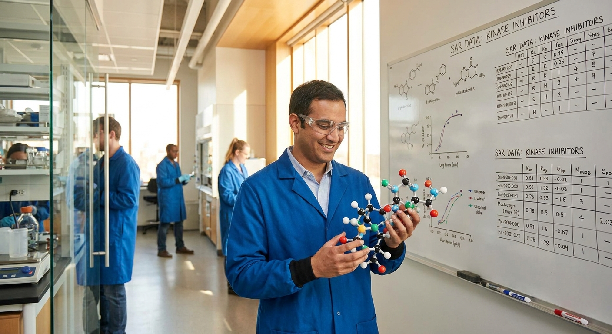

BioMate AI · 中文
Engineering the next generation of
therapeutics for immune-mediated disease.
Autoimmune. Chronic infection. Immuno-oncology.
One engine, built for the immune system.
We take on the hardest molecules in drug discovery — the ones others defer — and prove them in the wet lab. A closed loop of generative design, honest multi-constraint verification, and experimental feedback turns every round into a better next molecule, powered by AI and automation beneath.
Measured, not asserted
Benchmarked against
leading AI systems.
BixBench (205 tasks) — ahead of Biomni Lab at 88.7%
Exact workflow routing on 120 held-out cases (94.6% including equivalent pipelines)
ADMET workflow handling across 20 compounds (routing, parameters, inputs)
PBPK model validation pass rate (18 FDA compounds)
BioMate is the Innovation Partner of the Autoimmune Neuromuscular & Nerve Disorders Drug Development Summit, with a live main-stage demo. See how we measure → · About the summit →
The hard part
Drug discovery fails on the hard gates.
We built a system for each.
A molecule that binds is the easy part. Candidates die on selectivity, developability, freedom-to-operate, mechanism-correct physics, and the inability to learn from each experiment. We engineer against each one as a first-class part of the loop — not a post-hoc filter.
Selectivity
Binding is not enough. Counter-target scoring is built into the loop, so selectivity is an objective — not an afterthought.
Developability & permeability
Calibrated predictors act as gates during design, not filters at the end.
Freedom-to-operate
Patent-claim and compound/structure screening before a molecule is ever synthesized.
Mechanism-correct physics
Target-aware scoring — metal-dependent sites, grooves and motifs modeled explicitly for the biology.
Multi-objective optimization
Pareto selection across activity, safety and synthesizability — the real trade-off, made explicit.
Learning from the wet lab
Each assay result feeds back into the models, so a growing base of real measurements compounds round over round.
How a real therapeutic gets made
It takes many rounds,
and the wet lab decides.
Designing a therapeutic is not one shot. For a single target we run multiple optimization rounds — generate, score against every gate, select the Pareto-best, synthesize a focused set, test in the wet lab, and feed the results back so the next round is better. The hard gates are enforced every round. The wet lab, not the model, is ground truth.
See where we focus →Generate
De novo and scaffold-conditioned design across a programmable chemistry.
Verify
Every candidate scored against all the hard gates — physics, selectivity, FTO, developability.
Select
The Pareto-best set across the competing objectives.
Make & test
Synthesize a focused set; measure in the wet lab.
Learn
Feed the results back; the next round is better.
Our services and research
From biological insight
to therapeutic design.

Services
Biomedical Research Platform
Explore evidence, analyze data, apply models and develop reproducible results in a shared workbench.
Explore the platform →
Services
Drug Discovery
Connect target intelligence, molecular design and candidate evaluation with experimental learning.
Explore drug discovery →
Our research
Research Engines
Advancing Virtual Cell LLM and cyclic-peptide generation to deepen biological understanding and molecular design.
Meet the research programs →AI at work
More time for
scientific decisions.
BioMate helps plan and execute analyses, connects evidence across steps, and prepares results for review—reducing manual work throughout the research process.
See the workbench in action →Describe the objective
Turn a scientific question into a reviewable analysis plan.
Carry out the analysis
Bring data, models and computational workflows into the same process.
Review and build on results
Use quality checks, traceable outputs and reusable methods to guide the next step.

Drug discovery
Accelerate every
design–test–learn cycle.
From disease biology to candidate evaluation, keep evidence and experimental feedback connected. Our deeper research focuses on immunology, immuno-oncology and cyclic-peptide design.
Target intelligence → Molecular design → Developability → Experimental learning
Discover the workbench →Confidence in the work
Scientific depth.
Results you can inspect.
Evidence and quality
Inspect methods, parameters, quality checks and source evidence.
Explore evaluations →Reproducible research
Keep datasets, analyses and reports connected as your research evolves.
View worked examples →HIPAA-compliant
Support sensitive research with controlled access and private deployment options.
Discuss your team's needs →Explore research perspectives → · Read scientific articles →